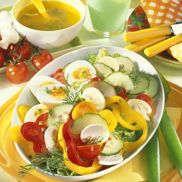

Colorful Summer Salad

Description
A German salad dish known as Bunter Sommersalat (colorful summer salad). A healthy and delicious salad with a variety of textures and aromas. This will be a suitable dish with which we can serve our potato pockets.
Ingredients
- 4 eggs
- 2 bell peppers (different colors)
- 1 seedless cucumber
- 3-1/2 oz button mushrooms (100g)
- 1/3 lb cherry tomatoes
- 1 head lettuce
- 1 bunch fresh chives
- 2 sprigs fresh dill
- 6 tbsp red wine vinegar
- 6 tbsp cold-pressed rapeseed oil (canola oil)
- salt and pepper
- sugar
Steps
- Boil the eggs for about 10 minutes. Rinse them in cold water, peel and cut them in half. Wash and clean the bell peppers and the cucumber. Cut the bell peppers into thin rings, the cucumber into thin slices. Clean the mushrooms and slice them thinly. Wash, trim and halve the tomatoes. Wash the lettuce and tear it into bite-size pieces. Gently mix the prepared ingredients in a large bowl. Arrange the egg halves on top.
- For the vinaigrette wash the herbs. Cut the chives into small pieces and chop the dill. Combine the vinegar, oil and herbs. Season with salt, pepper and sugar to taste and drizzle the salad with the vinaigrette.
Credit: germanfoods.org